Remap WOA18 to tx2_3#
%matplotlib inline
import xarray as xr
import xesmf
import numpy as np
import datetime
import matplotlib.pyplot as plt
today = datetime.date.today().strftime("%y%m%d")
print(today)
260306
def weighted_temporal_mean(da):
"""
weight by days in each month
"""
# Determine the month length
month_length = da.time.dt.days_in_month
# Calculate the weights
wgts = month_length.groupby("time.year") / month_length.groupby("time.year").sum()
# Make sure the weights in each year add up to 1
np.testing.assert_allclose(wgts.groupby("time.year").sum(xr.ALL_DIMS), 1.0)
# Subset our dataset for our variable
obs = da
# Setup our masking for nan values
cond = obs.isnull()
ones = xr.where(cond, 0.0, 1.0)
# Calculate the numerator
obs_sum = (obs * wgts).resample(time="YS").sum(dim="time")
# Calculate the denominator
ones_out = (ones * wgts).resample(time="YS").sum(dim="time")
# Return the weighted average
return obs_sum / ones_out
fname = '../mesh/tx2_3v3_grid.nc'
ds_out = xr.open_dataset(fname).rename({'tlon': 'lon','tlat': 'lat', 'qlon': 'lon_b',
'qlat': 'lat_b', 'nx' : 'xh', 'ny' : 'yh',
'depth' : 'z_l', 'tmask' : 'mask'})
ds_out
<xarray.Dataset> Size: 42MB
Dimensions: (yh: 480, xh: 540, nxp: 541, nyp: 481)
Dimensions without coordinates: yh, xh, nxp, nyp
Data variables: (12/20)
lon (yh, xh) float64 2MB ...
lat (yh, xh) float64 2MB ...
ulon (yh, nxp) float64 2MB ...
ulat (yh, nxp) float64 2MB ...
vlon (nyp, xh) float64 2MB ...
vlat (nyp, xh) float64 2MB ...
... ...
tarea (yh, xh) float64 2MB ...
mask (yh, xh) float64 2MB ...
angle (yh, xh) float64 2MB ...
z_l (yh, xh) float64 2MB ...
ar (yh, xh) float64 2MB ...
egs (yh, xh) float64 2MB ...
Attributes:
Description: CESM MOM6 2/3 degree grid
Author: Frank, Fred, Gustavo (gmarques@ucar.edu)
Created: 2026-03-05T14:49:28.971877
type: Glogal 2/3 degree grid fileinfile = '/glade/campaign/cgd/oce/datasets/obs/woa18/woa18_decav_merged_monthly_deep_04.nc'
ds_in = xr.open_dataset(infile)
ds_in
<xarray.Dataset> Size: 15GB
Dimensions: (time: 12, depth: 102, lat: 720, lon: 1440)
Coordinates:
* time (time) float64 96B 372.5 373.5 374.5 375.5 ... 381.5 382.5 383.5
* depth (depth) float64 816B 0.0 5.0 10.0 15.0 ... 5.3e+03 5.4e+03 5.5e+03
* lat (lat) float64 6kB -89.88 -89.62 -89.38 -89.12 ... 89.38 89.62 89.88
* lon (lon) float64 12kB -179.9 -179.6 -179.4 ... 179.4 179.6 179.9
Data variables:
t_an (time, depth, lat, lon) float32 5GB ...
s_an (time, depth, lat, lon) float32 5GB ...
theta0 (time, depth, lat, lon) float32 5GB ...ds_in["mask"] = xr.where(~np.isnan(ds_in["theta0"].isel(time=0,depth=0)), 1, 0)
def regrid_tracer(fld, ds_in, ds_out, method='bilinear'): # method = 'conservative_normed'
regrid = xesmf.Regridder(
ds_in,
ds_out,
method=method,
periodic=True,
)
#fld_out = regrid(ds_in[fld], skipna=True, na_thres=.25)#[0,0,:]#.where(ds_in.lat>ds_out.geolat.min())
fld_out = regrid(ds_in[fld])
return fld_out
Potential temperature#
temp = regrid_tracer('theta0', ds_in, ds_out)
temp
<xarray.DataArray (time: 12, depth: 102, yh: 480, xh: 540)> Size: 1GB
array([[[[nan, nan, nan, ..., nan, nan, nan],
[nan, nan, nan, ..., nan, nan, nan],
[nan, nan, nan, ..., nan, nan, nan],
...,
[nan, nan, nan, ..., nan, nan, nan],
[nan, nan, nan, ..., nan, nan, nan],
[nan, nan, nan, ..., nan, nan, nan]],
[[nan, nan, nan, ..., nan, nan, nan],
[nan, nan, nan, ..., nan, nan, nan],
[nan, nan, nan, ..., nan, nan, nan],
...,
[nan, nan, nan, ..., nan, nan, nan],
[nan, nan, nan, ..., nan, nan, nan],
[nan, nan, nan, ..., nan, nan, nan]],
[[nan, nan, nan, ..., nan, nan, nan],
[nan, nan, nan, ..., nan, nan, nan],
[nan, nan, nan, ..., nan, nan, nan],
...,
...
[nan, nan, nan, ..., nan, nan, nan],
[nan, nan, nan, ..., nan, nan, nan],
[nan, nan, nan, ..., nan, nan, nan]],
[[nan, nan, nan, ..., nan, nan, nan],
[nan, nan, nan, ..., nan, nan, nan],
[nan, nan, nan, ..., nan, nan, nan],
...,
[nan, nan, nan, ..., nan, nan, nan],
[nan, nan, nan, ..., nan, nan, nan],
[nan, nan, nan, ..., nan, nan, nan]],
[[nan, nan, nan, ..., nan, nan, nan],
[nan, nan, nan, ..., nan, nan, nan],
[nan, nan, nan, ..., nan, nan, nan],
...,
[nan, nan, nan, ..., nan, nan, nan],
[nan, nan, nan, ..., nan, nan, nan],
[nan, nan, nan, ..., nan, nan, nan]]]],
shape=(12, 102, 480, 540), dtype=float32)
Coordinates:
* time (time) float64 96B 372.5 373.5 374.5 375.5 ... 381.5 382.5 383.5
* depth (depth) float64 816B 0.0 5.0 10.0 15.0 ... 5.3e+03 5.4e+03 5.5e+03
Dimensions without coordinates: yh, xh
Attributes:
regrid_method: bilinearVisual inspection#
Make sure original and remapped plots look similar.
#%matplotlib ipympl
# visual inspection. Make sure original and remapped plots look similar
for t in range(len(temp.time)):
fig, axes = plt.subplots(nrows=1, ncols=2, figsize=(18,4))
temp[t,0,:,:].plot.pcolormesh(ax=axes[0], vmin=-2,vmax=30)
ds_in['theta0'][t,0,:,:].plot.pcolormesh(ax=axes[1], vmin=-2,vmax=30)
axes[0].set_title('Remapped')
axes[1].set_title('Original grid')
plt.suptitle('Month ='+ str(t+1))
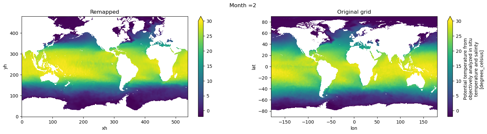
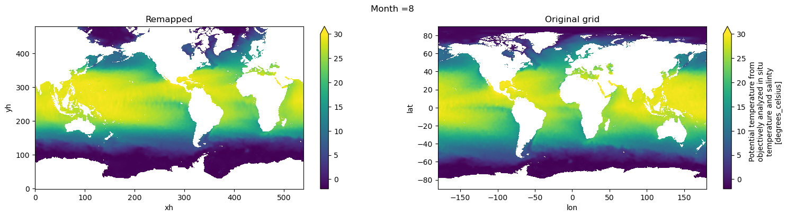
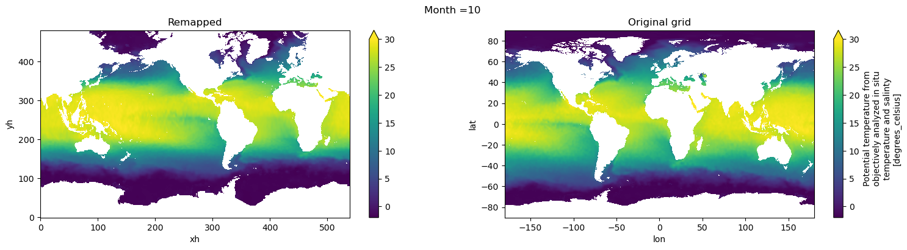
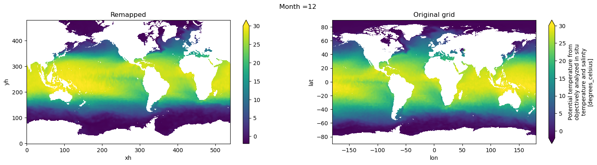
Salinity#
salt = regrid_tracer('s_an', ds_in, ds_out)
Visual inspection#
Make sure original and remapped plots look similar.
# visual inspection. Make sure original and remapped plots look similar
for t in range(len(temp.time)):
fig, axes = plt.subplots(nrows=1, ncols=2, figsize=(18,4))
salt[t,0,:,:].plot.pcolormesh(ax=axes[0], vmin=20,vmax=37)
ds_in['s_an'][t,0,:,:].plot.pcolormesh(ax=axes[1], vmin=20,vmax=37)
axes[0].set_title('Remapped')
axes[1].set_title('Original grid')
plt.suptitle('Month ='+ str(t+1))
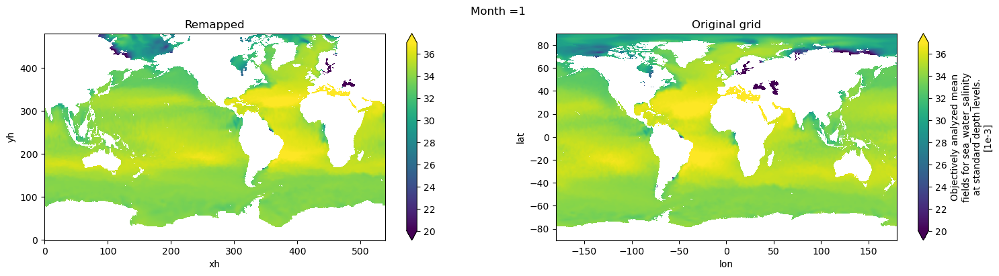
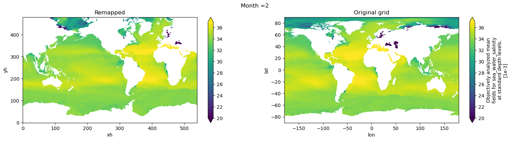
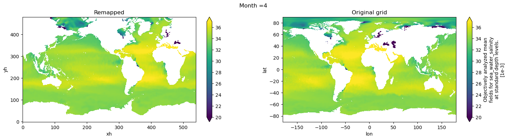
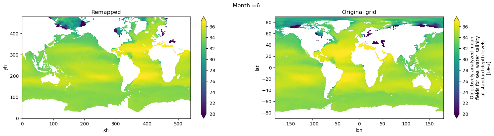
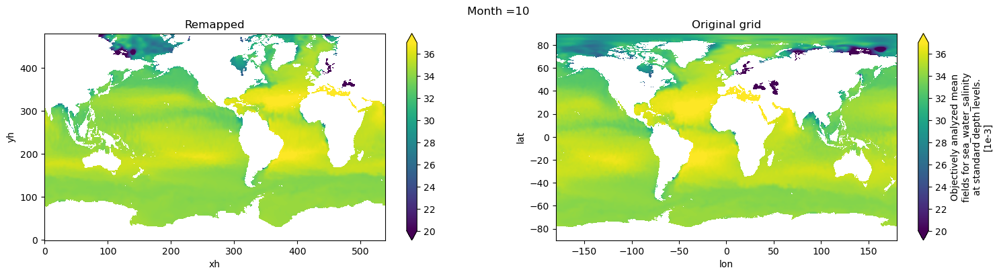
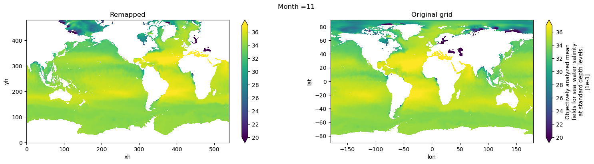
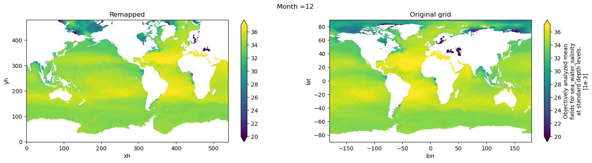
WOA09 layer depths#
To keep consistency with previous datasets and to avoid modifying parameter DIAG_COORD_DEF_Z in CESM/MOM6, we will vertically interpolate temp and salt to the 34 layer depths from WOA09
depths_woa09 = np.array([2.5, 10, 20, 32.5, 51.25, 75, 100, 125, 156.25, 200, 250, 312.5, 400,
500, 600, 700, 800, 900, 1000, 1100, 1200, 1300, 1400, 1537.5, 1750,
2062.5, 2500, 3000, 3500, 4000, 4500, 5000, 5500, 6000]);
Monthly means#
temp_depths_woa09 = temp.interp(depth=depths_woa09).rename('thetao').rename({'depth':'z_l'})
# Global attrs
temp_depths_woa09.attrs['title'] = 'Potential temperature (monthly mean) from WOA18 remapped to tx2_3 and vertically interpolated to the WOA09 depths.'
temp_depths_woa09.attrs['author'] = 'Gustavo Marques (gmarques@ucar.edu)'
temp_depths_woa09.attrs['date'] = today
temp_depths_woa09.attrs['infile'] = infile
temp_depths_woa09.attrs['url'] = 'https://github.com/NCAR/tx2_3/woa18'
# save
fname = 'WOA18_TEMP_tx2_3v3_35lev_monthly_avg_{}.nc'.format(today)
temp_depths_woa09.to_netcdf(fname)
/glade/u/apps/opt/miniforge/envs/npl-2026a/lib/python3.13/site-packages/dask/config.py:786: FutureWarning: Dask configuration key 'allowed-failures' has been deprecated; please use 'distributed.scheduler.allowed-failures' instead
warnings.warn(
salt_depths_woa09 = salt.interp(depth=depths_woa09).rename('so').rename({'depth':'z_l'})
# Global attrs
salt_depths_woa09.attrs['title'] = 'Salinity (monthly mean) from WOA18 remapped to tx2_3 and vertically interpolated to the WOA09 depths.'
salt_depths_woa09.attrs['author'] = 'Gustavo Marques (gmarques@ucar.edu)'
salt_depths_woa09.attrs['date'] = today
salt_depths_woa09.attrs['infile'] = infile
temp_depths_woa09.attrs['url'] = 'https://github.com/NCAR/tx2_3/woa18'
# save
fname = 'WOA18_SALT_tx2_3v3_35lev_monthly_avg_{}.nc'.format(today)
salt_depths_woa09.to_netcdf(fname)
Annual mean#
temp['time'] = xr.date_range("0001-01-01", periods=12, freq="MS", calendar="noleap", use_cftime=True)
temp_depths_woa09_ann = weighted_temporal_mean(temp).interp(depth=depths_woa09).rename('thetao').rename({'depth':'z_l'})
# Global attrs
temp_depths_woa09_ann.attrs['title'] = 'Potential temperature from WOA18 (annual mean) remapped to tx2_3 and vertically interpolated to the WOA09 depths.'
temp_depths_woa09_ann.attrs['author'] = 'Gustavo Marques (gmarques@ucar.edu)'
temp_depths_woa09_ann.attrs['date'] = today
temp_depths_woa09_ann.attrs['infile'] = infile
temp_depths_woa09.attrs['url'] = 'https://github.com/NCAR/tx2_3/woa18'
# save
fname = 'WOA18_TEMP_tx2_3v3_35lev_ann_avg_{}.nc'.format(today)
temp_depths_woa09_ann.to_netcdf(fname)
salt['time'] = xr.date_range("0001-01-01", periods=12, freq="MS", calendar="noleap", use_cftime=True)
salt_depths_woa09_ann = weighted_temporal_mean(salt).interp(depth=depths_woa09).rename('so').rename({'depth':'z_l'})
# Global attrs
salt_depths_woa09_ann.attrs['title'] = 'Salinity from WOA18 (annual mean) remapped to tx2_3 and vertically interpolated to the WOA09 depths.'
salt_depths_woa09_ann.attrs['author'] = 'Gustavo Marques (gmarques@ucar.edu)'
salt_depths_woa09_ann.attrs['date'] = today
salt_depths_woa09_ann.attrs['infile'] = infile
temp_depths_woa09.attrs['url'] = 'https://github.com/NCAR/tx2_3/woa18'
# save
fname = 'WOA18_SALT_tx2_3v3_35lev_ann_avg_{}.nc'.format(today)
salt_depths_woa09_ann.to_netcdf(fname)